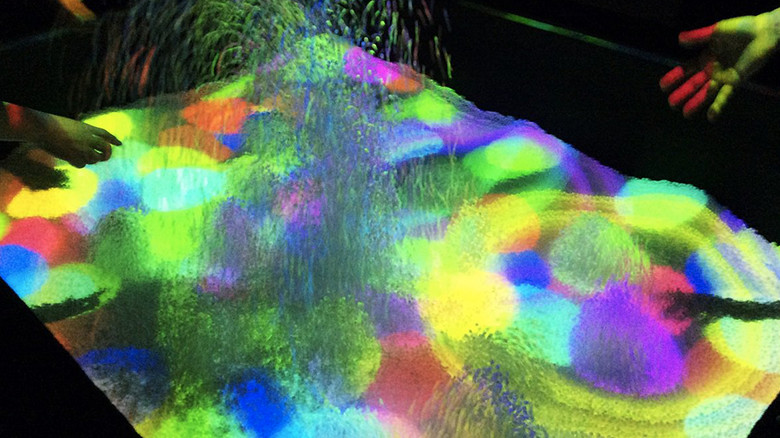

digital

的場やすし
https://www.youtube.com/watch?v=lrU0YYqeyNY-どんな人
現在電気通信大のマスターに在籍している研究者です。仮想世界と実物体を融合した新しいインタフェースについて研究しています。
-解説
テーブル上に大量の白い小さな発砲ビーズが敷き詰められています。この発砲ビーズはスクリーンの役割を担っており、玉を投げると、色が変わったり、噴きあがったり、様々な反応を見せます。大人も子供も楽しめるインタラクティブな作品です。
-好きなところ
玉をなげるとビーズが吹き上がるという反応がシンプルですが、誰でも楽しめていいなと思いました。 この人の他の研究も面白いので興味を持った方はぜひご覧ください → https://www.youtube.com/watch?v=9MjOrrjm1-I 砂を液体のような性質にして水の上に浮かぶボートのような体験のVR化を可能にする装置だそうです。